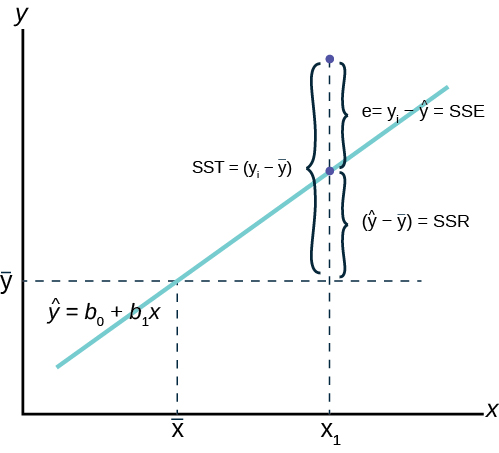

- law of multiplication : P(b/a)=p(anb)/p(a)
- mass function and density function / for discrete variable:mass function / continous varibale:density function
- probablity Mass functions
- binomial distribution : P(x=r)=nCr*P^r*q^(n-r), prbality of
- Poisson distribution: P(x=r)=M^r/factorial r*e^-m, if no of trial is infinie then np=M
- probality Density function
- normal distribution:
- Standard distribution: after application of Z/ Z= (x-mu)/sigma
- +- 1 sigma= 68%
- +- 2 sigma= 95%
- +- 3 sigma= 99.7%
- +- 6 sigma= 99.99
- for 6 sigma process =3.5 DPMO with 1.5 sigma shift (Defect per million opportunity (opportunity not equal parts, one part may have different kind of defect and hence many opportunity ))
- Bayes law :
- symbols
measure poulation sample size N n means μ X̄ Std dev σ S - CLT , central limit theorem
- Estimation from sample
Population σ sample condition n/N >0.05 (Population finite) n/N < 0.05 (population infinite) fomula known 30>n>30 \[σ̂= {σ\over \sqrt{n}}*\sqrt{(N-n)\over(N-1)} \] \[ σ̂= {σ\over \sqrt{n}} \] \[ μ= x̄ \pm z* σ̂ \] not known
use S in place of σ
\[s=\sqrt{\sum_{i=1}^n (x_i-x)^2 \over (n-1)} \]n > 30 \[σ̂= {s\over \sqrt{n}}*\sqrt{(N-n)\over(N-1)} \] \[ σ̂= {s\over \sqrt{n}} \] \[ μ= x̄ \pm z* σ̂ \] n < 30 , use t in place of z
when polpulation is normal or near normalcomplex problem \[ σ̂= {s\over \sqrt{n}} \] \[ μ= x̄ \pm t* σ̂ \] calculating propotion n > 30
complex problem \[ σ̂= \sqrt{p*q\over n} \] \(P(population)= p(sample)\pm z * σ̂ \)
text 3
text 6
- theory
- \[ Y= \sum_{i=1}^n (m_i*x_i) +C \]
- Y is dependent variable , X is independent variable
- only co-relation is not enough for regression
- Regression= co-relation + causality (explained relationship)
- in regression limit is important ,as Y =mx+c will hold valid only for certain range . eg age vs height is valid only till certain age . 
- SST: totoal error / SSR:error from average to regression / SSE: error of y from regression
- SST=SSR+SSE (SS:sum of square / T:total /E:error /R:regression)
- Rsquare=SSR/SSR so Rsqure is ,what % of variation ,from average, is explained by model
- also Rsquare =1-SSE/SST
- Interpreting result
- p value less than 0.05 is significant
- F test P value : if P less than 0.05 then y depends on atleast one of X
- check form plot wheter resuduals is normal and has no pattern
- indiviudla X , t test p value : p less than 0.05, then y depends on that x
- if none of x has p value lesss tha 0.05 but overall f test is sigificant , then y depends on combinaition of x, i.e multiple x are related
- corelation of multiple x can be tested by corelation or VIF score
- VIF: variance influence factor
- VIF=1/(1-Rsqaure)
- Rsq is taken between variable, to know correlation among variable
- take one variable as y and find regression with remaining x
- less VIF means less relation and hence variable are independednt
- VIF of less than 5 is good
- variable with more VIF score to be dropped
- R2 score :s perecentage of data explained by regression , more R2 is not always better
- adding more varaible wil always increase R2 , so adjuested R2 value is better
- Till when to add variable
- with more X , Rsq increases, but Rsq-adjusted increases then decreases , cutoff is max Rsq-adjusted value
- forward selection: go on adding variable according to correlation ,till Rsq-adjusted is max
- Backward elimination : start with all X , then drop starting with least relted x, stop when Rsq-adjusted is max
text 7
- Statistical process control , Runc chart
- annova and gauge R&R